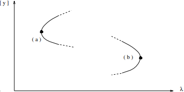

A commonly encountered class of bifurcations are the turning points. They can be introduced using the scalar equations \( 0 = y^2 - \lambda \quad \text{or} \quad 0 = y^2 + \lambda \)
Other names for turning points are fold bifurcations, saddle nodes, or limit points. The name saddle node is motivated by the stability behavior of the solutions when they are interpreted as equilibria of differential equations. For the scalar differential equation \(\dot{y} = \lambda - y^2\), clearly the equilibrium \( +\sqrt{\lambda} \) is stable, whereas \( -\sqrt{\lambda} \) is unstable
The question arises as to whether a turning point always separates stable equilibria from unstable equilibria. The answer is \(\boxed{no}\). Construct a counterexample in higher dimensions: \( \dot{y}_1 = \lambda - y_1^2, \quad \dot{y}_2 = y_1 + c y_2 \) A stability analysis of the equilibria of equation reveals that one equilibrium is a saddle and the other is a node. The stability of the node is determined by the sign of \( c \)
Both the half-branches meeting at a turning point can be unstable
We call a branch or a part of a branch stable (unstable) if all its solutions are stable (unstable). A branch will be called periodic, symmetric, or stationary if its solutions are periodic, symmetric, or stationary.
1Seydel, R. (2010). Practical Bifurcation and Stability Analysis. Interdisciplinary Applied Mathematics, vol 5. Springer, New York, NY.